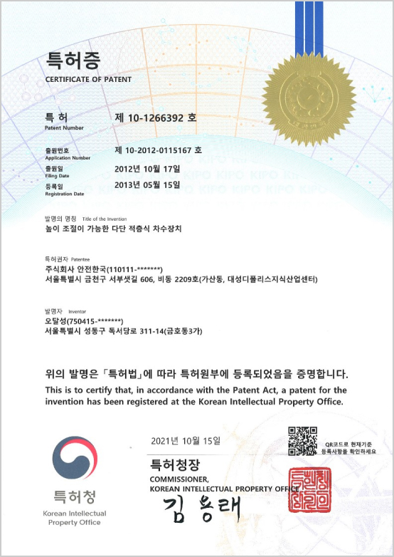
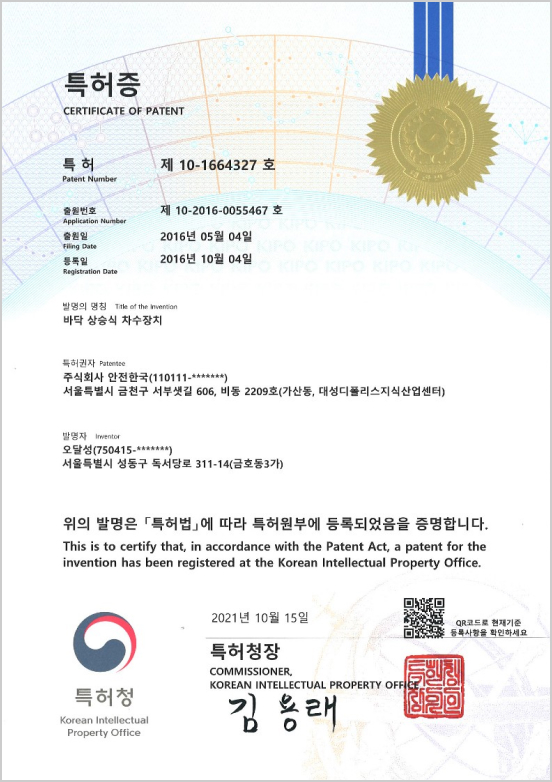
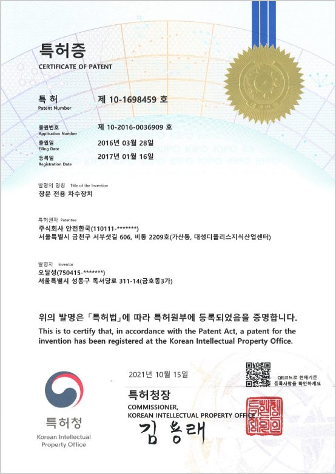
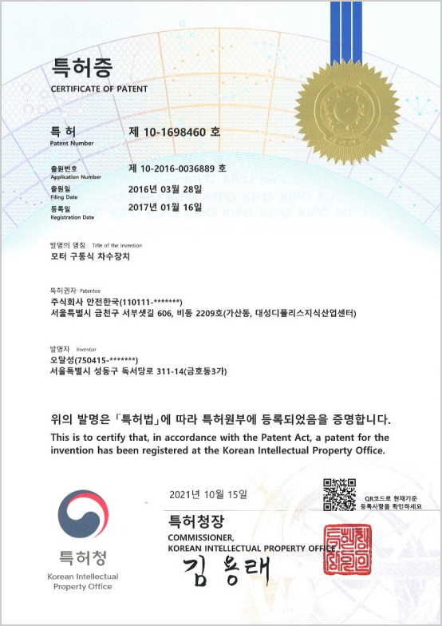
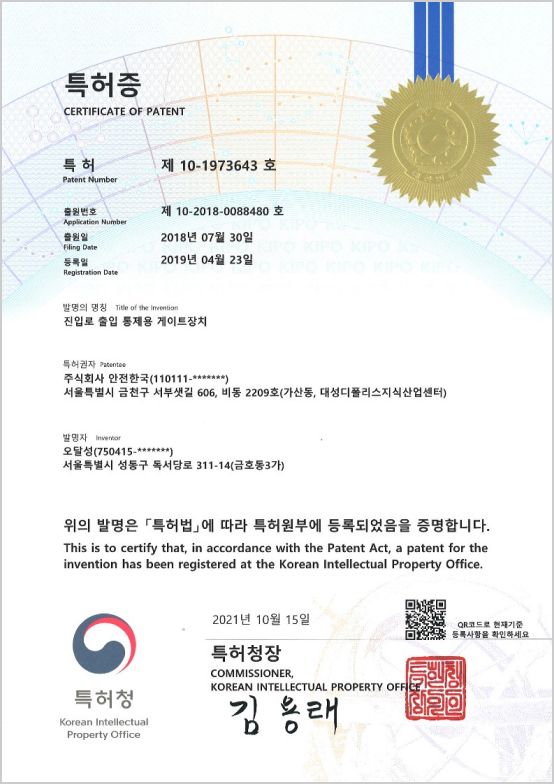
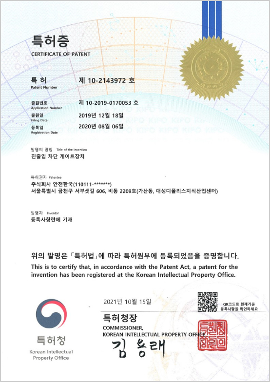
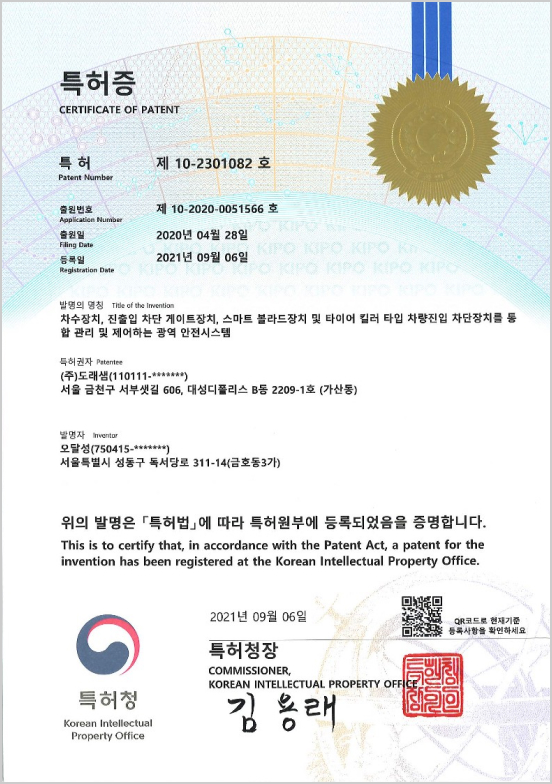
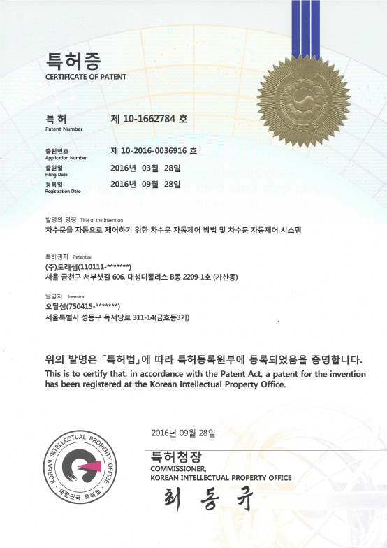

회사 소개About Company
급박한 수해 위험으로부터 인명과 재산을
지키기 위한 진출입 게이트와 차수판 제작과 시공!
(주)도래샘이 함께 합니다.
안녕하세요.
귀사의 무궁한 발전을 기원하며 아울러 저희 도래샘을 소개할 수 있게 된 것을 큰 기쁨으로 생각합니다.
도래샘은 진출입 게이트와 차수판 등 위험으로부터 인명과 재산을 보호하는 안전게이트를 전문으로 개발하는 기업입니다. 안전게이트의 설계부터 제작, 시공 및 유지보수에 이르기까지 모든 공정을 자체 노하우로 통합 관리하고 있습니다.
주택, 상가, 빌딩, 아파트, 주차장의 출입구, 교량, 하천, 산책로 등 진출입 게이트와 차수판이 필요한 모든 곳에 개발하여 시공하고 있습니다. 나날이 변화하는 환경 및 시설에 따라 저희 도래샘도 이에 발맞추어 더욱 향상된 제품을 지속적으로 개발하고 있습니다.
도래샘은 완벽한 수밀/차단과 검증된 구조를 통해 기계적인 완벽함을 추구하며, 발전하는 정보통신기술을 적용하여 원격에서 손쉽게 제어할 수 있는 스마트 안전게이트 관제시스템을 제공합니다. 이를 통해 보다 신속하고 편리하게 피해를 최소화할 수 있습니다.
늘 초심으로 고객을 대하고 10년 노하우의 안정된 제작과 시공으로 고객 여러분께 보답할 것을 약속 드립니다.
감사합니다.
스마트 안전게이트 제작 공급 실적
-
차수판
- 서울특별시 (21개소)
- 종로구청, 용산구청, 성동구청, 동대문구청, 중랑구청, 성북구청, 강북구청, 도봉구청, 노원구청, 은평구청, 서대문구청, 마포구청, 구로구청, 금천구청, 영등포구청, 동작구청, 관악구청, 서초구청, 강남구청, 송파구청, 강동구청
- 경기도 (18개소)
- 수원시청, 성남시청, 의정부시청, 안양시청, 부천시청, 광명시청, 평택시청, 동두천시청, 고양시청, 과천시청, 구리시청, 오산시청, 시흥시청, 용인시청, 안성시청, 김포시청, 양주시청, 포천시청
- 부산광역시 (10개소)
- 서구청, 부산진구청, 동래구청, 해운대구청, 사하구청, 금정구청, 강서구청, 연제구청, 사상구청, 기장군청
- 인천광역시 (8개소)
- 중구청, 동구청, 미추홀구청, 연수구청, 남동구청, 계양구청, 서구청, 강화군청
- 경상북도 (3개소)
- 영덕군, 영주시, 울진군
- 경상남도 (3개소)
- 창원시, 진주시, 거제시
-
진출입 게이트
- 서울특별시
- 관악구청 (27개소)
구로구청 (9개소)
은평구청 (55개소)
영등포구청 (15개소)
성북구청 (15개소)
노원구청 (15개소)
강동구청 (2개소) - 경기도
- 부천시 (9개소)
- 경상북도
- 상주시청 (2개소)
보유 특허
Owned Patent
(주)도래샘은 특허 11개, 디자인등록 10개, 상표등록 1개를 보유한 기술기업 입니다.
- 
< 높이 조절이 가능한 다단 적층식 차수장치 >
- 
< 바닥 상승식 차수장치 >
- 
< 창문 전용 차수장치 >
- 
< 모터 구동식 차수장치 >
< 업다운 스윙식 자동 차수장치 >
- 
< 진입로 출입 통제용 게이트장치 >
- 
< 진출입 차단 게이트장치 >
- 
< 차수 장치, 진출입 차단 게이트 장치 통합 관리 및 제어하는 광역 안전시스템 >
- 
< 차수판 자동제어 시스템 >